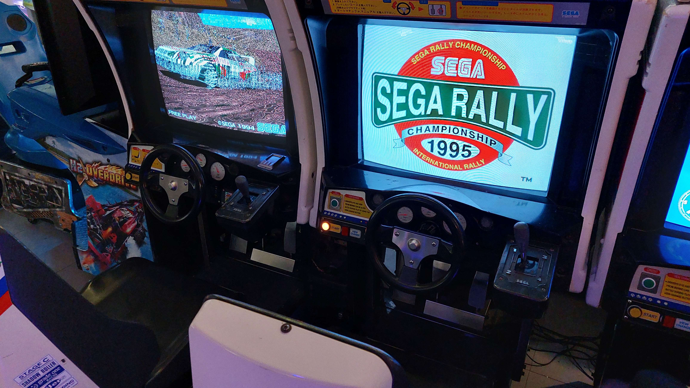

Openingstijden
Ma: Gesloten Di: Gesloten Wo: 10.00-12.00 | 12.00-14.00 | 14.00-16.00 | 16.00-18.00 uur Do: 10.00-12.00 | 12.00-14.00 | 14.00-16.00 | 16.00-18.00 uur Vr: 10.00-12.00 | 12.00-14.00 | 14.00-16.00 | 16.00-18.00 | 18.00-21.00 uur Za: 10.00-12.00 | 12.00-14.00 | 14.00-16.00 | 16.00-18.00 uur Zo: 12.00-14.00 | 14.00-16.00 | 16.00-18.00 uur